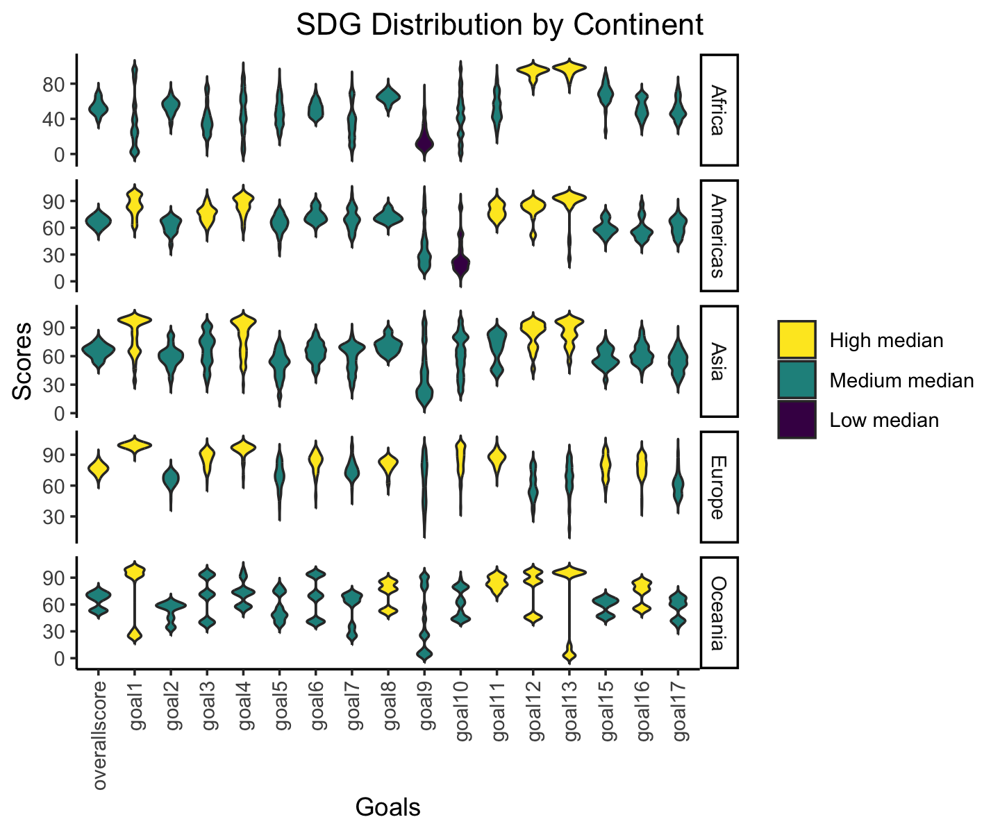
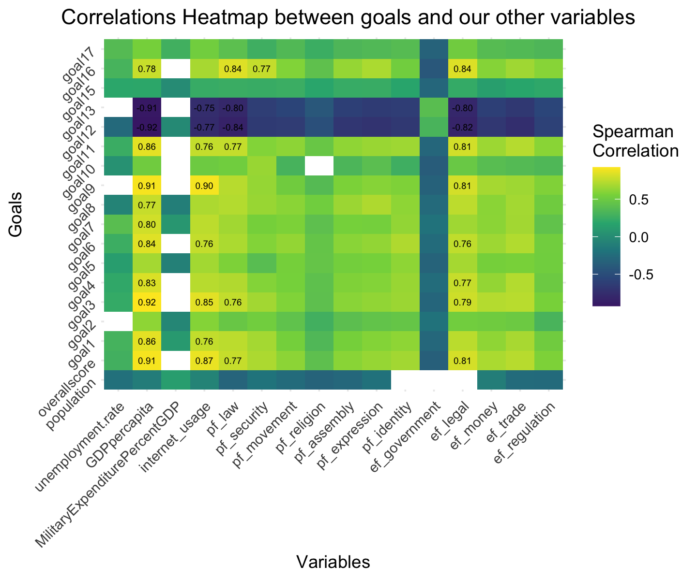

Focus on the influence of the factors over the SDG scores
For this first part of our EDA, let’s try to check first the distribution of the variables selected for answering our 1st question.
# Reshape the data from wide to long format for our sdg goals and our human freedom index scoreslong_df_goal_distribution <-pivot_longer(Correlation_overall, cols =starts_with("goal"), names_to ="Goal", values_to ="Value")long_df_goal_distribution$Goal <-with(long_df_goal_distribution, reorder(Goal, Value, FUN = mean))long_df_hfi_distribution <-pivot_longer(Correlation_overall, cols = pf_law:ef_regulation, names_to ="Category", values_to ="Value")long_df_hfi_distribution$Goal <-with(long_df_hfi_distribution, reorder(Category, Value, FUN = mean))ggplot(long_df_goal_distribution, aes(x = Value, y = Goal, fill =stat(x))) +geom_density_ridges_gradient(scale =3, size =0.3, rel_min_height =0.01) +scale_fill_viridis_c(name ="", option ="C") +theme(plot.title =element_text(hjust =0.5), # Center the titleplot.title.position ="plot") +labs(x ='Scores',y ='Goals',title ='SDG Goals Distribution')
As we can see, most of our goals have a left-skewed distribution, which shows that for most of the country concerned implemented good strategies for targeting the goals objectives. Some distribution have a longer distribution than other, which could be a proof of inequality in the investments made for implementing solutions. In another hand, we notice that the only right-skewed distribution is concerning the observations of goal 9, which is promoting infrastructures, innovation and inclusive and sustainable industrialization. Again, that could show means inequalities. Wealthier countries are able to invest more on these sustainable development goals.
ggplot(long_df_hfi_distribution, aes(x = Value, y = Category, fill =stat(x))) +geom_density_ridges_gradient(scale =3, size =0.3, rel_min_height =0.01) +scale_fill_viridis_c(name ="", option ="C") +theme(plot.title =element_text(hjust =0.5), # Center the titleplot.title.position ="plot") +labs(x ='Scores',title ='Human Freedom Index Scores Distribution')# Create the ggplot objectsp1 <-ggplot(long_df_goal_distribution, aes(x = Value, y = Goal, fill =stat(x))) +geom_density_ridges_gradient(scale =3, size =0.3, rel_min_height =0.01) +scale_fill_viridis_c(name ="", option ="C") +theme(plot.title =element_text(hjust =0.5)) +labs(x ='Scores', y ='Goals', title ='SDG Goals Distribution')p2 <-ggplot(long_df_hfi_distribution, aes(x = Value, y = Category, fill =stat(x))) +geom_density_ridges_gradient(scale =3, size =0.3, rel_min_height =0.01) +scale_fill_viridis_c(name ="", option ="C") +theme(plot.title =element_text(hjust =0.5)) +labs(x ='Scores', title ='Human Freedom Index Scores Distribution')# Convert to plotly objectsp1_ly <-ggplotly(p1)p2_ly <-ggplotly(p2)# Combine using subplot (hide the second plot initially)subplot(p1_ly, p2_ly, nrows =1, widths =c(1, 0), margin =0.05) %>%layout(updatemenus =list(list(type ="buttons",direction ="left",x =0.1,xanchor ="left",y =1.1,yanchor ="top",pad =c(r =10, t =10),showactive =FALSE,buttons =list(list(label ="SDG Goals Distribution",method ="relayout",args =list("subplot", c(1, 0)) ),list(label ="Human Freedom Index Scores",method ="relayout",args =list("subplot", c(0, 1)) ) ) ) ) )
The distribution of the Human Freedom Index Score follows the same trend. Most of the scores are left-skewed, which means that countries tend to have in general good scores. The only scores not folowing are pf_law and ef_legal, which tend to have lower scores in general. Legal system, for civilians and countries, is changing slowly because it has a lot of implications over the situation within a country/between countries and because of the divergence of opinions. Therefore, investing more money for raising these scores will take more time than raising the scores of other goals.
Now let’s consider the remaining variables of the dataset dedicated to answering the influence of factors over our SDG goals scores. All these variables have right-skewed distribution. Taking the mode into account, most of the concerned countries in our data have an unemployment rate between 2 to 7%, a distribution of GDP per capita between $3’000-$10’000, a distribution of military expenditure in percentage of the GDP 10% to 20% and finally a internet usage between 0 and 10%.
These variables shows us even more the inequalities between the countries in our dataset. While most of our countries have low internet usage or/and a low GDP per capita, few countries are more developed, then mostly wealthier, and thus having better chances to get higher scores.
#now, same for the remaining variables. No need to reshape our data as only one variable.unempl_d <-ggplot(Correlation_overall, aes(x = unemployment.rate, y =1, fill =stat(x))) +geom_density_ridges_gradient(scale =3, size =0.3, rel_min_height =0.01) +scale_fill_viridis_c(name ="", option ="C") +theme(plot.title =element_text(hjust =0.5, size =10), # Center the titleplot.title.position ="plot") +labs(y ='Density',title ='Distribution of Unemployment Rate')gdp_d <-ggplot(Correlation_overall, aes(x = GDPpercapita, y =1, fill =stat(x))) +geom_density_ridges_gradient(scale =3, size =0.3, rel_min_height =0.01) +scale_fill_viridis_c(name ="", option ="C") +theme(plot.title =element_text(hjust =0.5, size =10), # Center the titleplot.title.position ="plot") +labs(y ='Density', title ='Distribution of GDP per Capita')milit_d <-ggplot(Correlation_overall, aes(x = MilitaryExpenditurePercentGDP, y =1, fill =stat(x))) +geom_density_ridges_gradient(scale =3, size =0.3, rel_min_height =0.01) +scale_fill_viridis_c(name ="", option ="C") +theme(plot.title =element_text(hjust =0.5, size =10), # Center the titleplot.title.position ="plot") +labs(y ='Density',title ='Distribution of Military Expenditure (% of GDP)')internet_d <-ggplot(Correlation_overall, aes(x = internet_usage, y =1, fill =stat(x))) +geom_density_ridges_gradient(scale =3, size =0.3, rel_min_height =0.01) +scale_fill_viridis_c(name ="", option ="C") +theme(plot.title =element_text(hjust =0.5, size =10),plot.title.position ="plot") +labs(y ='Density',title ='Distribution of Internet Usage')grid.arrange(unempl_d,gdp_d,milit_d,internet_d, ncol =2, nrow =2)
Now, let’s display the distribution of the different SDG achievement scores per continent, using violin boxplots to have an overview of the mods, the range with most of the observations and the outliers.
#### boxplots #####For sdg goals per continent #Africadata_Q1_Africa <- data_question1 %>%#filtering Africa as continentfilter(data_question1$continent =='Africa') %>% dplyr::select(continent, overallscore, goal1, goal2, goal3, goal4, goal5, goal6, goal7, goal8, goal9, goal10, goal11, goal12, goal13, goal15, goal16, goal17)data_Q1_Africa_long <-melt(data_Q1_Africa)medians_AF <- data_Q1_Africa_long %>%#median per variablegroup_by(variable) %>%summarize(median_value =median(value))data_Q1_Africa_long <- data_Q1_Africa_long %>%left_join(medians_AF, by ="variable")#Americadata_Q1_Americas <- data_question1 %>%#filtering Americas as continentfilter(data_question1$continent =='Americas') %>% dplyr::select(continent, overallscore, goal1, goal2, goal3, goal4, goal5, goal6, goal7, goal8, goal9, goal10, goal11, goal12, goal13, goal15, goal16, goal17)data_Q1_Americas_long <-melt(data_Q1_Americas)medians_AM <- data_Q1_Americas_long %>%#median per variablegroup_by(variable) %>%summarize(median_value =median(value))data_Q1_Americas_long <- data_Q1_Americas_long %>%left_join(medians_AM, by ="variable")#Asiadata_Q1_Asia <- data_question1 %>%filter(data_question1$continent =='Asia') %>%#filtering Asia as continent dplyr::select(continent, overallscore, goal1, goal2, goal3, goal4, goal5, goal6, goal7, goal8, goal9, goal10, goal11, goal12, goal13, goal15, goal16, goal17)data_Q1_Asia_long <-melt(data_Q1_Asia)medians_AS <- data_Q1_Asia_long %>%#median per variablegroup_by(variable) %>%summarize(median_value =median(value))data_Q1_Asia_long <- data_Q1_Asia_long %>%left_join(medians_AS, by ="variable")#Europedata_Q1_Europe <- data_question1 %>%filter(data_question1$continent =='Europe') %>%#filtering Europe as continent dplyr::select(continent, overallscore, goal1, goal2, goal3, goal4, goal5, goal6, goal7, goal8, goal9, goal10, goal11, goal12, goal13, goal15, goal16, goal17)data_Q1_Europe_long <-melt(data_Q1_Europe)medians_EU <- data_Q1_Europe_long %>%#median per variablegroup_by(variable) %>%summarize(median_value =median(value))data_Q1_Europe_long <- data_Q1_Europe_long %>%left_join(medians_EU, by ="variable")#Oceaniadata_Q1_Oceania <- data_question1 %>%filter(data_question1$continent =='Oceania') %>%#filtering Oceania as continent dplyr::select(continent, overallscore, goal1, goal2, goal3, goal4, goal5, goal6, goal7, goal8, goal9, goal10, goal11, goal12, goal13, goal15, goal16, goal17)data_Q1_Oceania_long <-melt(data_Q1_Oceania)medians_OC <- data_Q1_Oceania_long %>%#median per variablegroup_by(variable) %>%summarize(median_value =median(value))data_Q1_Oceania_long <- data_Q1_Oceania_long %>%left_join(medians_OC, by ="variable")# merge all mediansmedians_all <-rbind(data_Q1_Oceania_long, data_Q1_Americas_long,data_Q1_Africa_long,data_Q1_Asia_long,data_Q1_Europe_long)medians_all$color <-ifelse(medians_all$median_value >75, "lightgreen",ifelse(medians_all$median_value <25, "red3", 'lightblue3')) #assigning colors. If median for a goal is > 75 -> lightblue, if < 25 -> red, orange otherwise.bandwidth_nrd <-bw.nrd(medians_all$value) #adapting the bandwidthggplot(medians_all, aes(x = variable, y = value, fill = color)) +geom_violin(trim =FALSE, bw = bandwidth_nrd) +scale_fill_manual(values =c("lightgreen"="lightgreen", "red3"="red3", "lightblue3"="lightblue3"),labels =c("between", ">75", "<25")) +labs(title ="SDG Goals Distribution by Continent", x ="Goals", y ="Scores", fill ="Score Category") +facet_grid(continent ~ ., scales ="free_y") +scale_y_continuous(labels = scales::label_number()) +theme_classic() +theme(plot.title =element_text(hjust =0.5), # Center the titleplot.title.position ="plot", axis.text.x =element_text(angle =90, vjust =0.5, hjust=1))

Here is the distribution of the goals per continent. We notice that Europe the continent with most of its goals having a median superior to 75 (represented by the lightblue color. We notice that only two goals have a median score lower than 25, which is for goal 9 for Africa and goal 10 for America. As seen before, goal 9 is generally having lower scores than the other goals. That could mean that the access to technology and sustainable/resilient infrastructures/industrialization is harder in Africa, because of various reasons such as less wealthy countries, corruption,…
The goal 10 concerns the reduction of inequalities within/amongst countries. Therefore, we presume that less effort and investment has been made on this goal in America.
In addition, some distributions are quite disparsed, such as goal 13 in Oceania and goal 10 in Africa. That could again show inequalities within countries or less investment made to raise the scores by different countries of the same continent.
Now let’s display boxplots for the different variables of the human freedom index.
Here we can notice the same results as before concerning the SDG goals, except that no score has a median below 25%. Again, Europe is the continent with most of its median scores superior to 75 (lightblue color)
For space reason because of the different scales, we have decided not to make violin boxplot per continent for the remaining variables. The distribution can be seen in the general distribution seen prior to that.
Now, let’s have a closer look to the general correlation between our variables. Using our cleaned dataset, we will use a correlation heatmap to help us vizualising the informations. Given that most of our variables are not normally distributed, we will use the Spearman method to calculate the correlation.
#### Correlations between variables Heatmap ####Correlation_overall <-data_question1 %>%# selection of the numerical data dplyr::select(population:ef_regulation)cor_matrix_sper <-# calculation of the correlation matrixcor(Correlation_overall, method ="spearman", use ="everything")cor_melted <-# wide to long transformationmelt(cor_matrix_sper)ggplot(data = cor_melted, aes(Var1, Var2, fill = value)) +geom_tile() +scale_fill_gradient2(low ="blue", high ="red", mid ="white", midpoint =0, limit =c(-1, 1), space ="Lab", name="Spearman\nCorrelation") +theme_minimal() +theme(axis.text.x =element_text(angle =45, vjust =1, size =6, hjust =1),axis.text.y =element_text(size =6),plot.title =element_text(hjust =0.5)) +coord_fixed() +labs(x ='', y ='', title ='Correlation Matrix Heatmap')
By looking at our heatmap, we notice that most of our goals are strongely correlated together and that some variables amongst the Human Freedom Index scores too (strong correlation among personal freedom variables (pf), reflecting scores from the Human Freedom Index on movement, religion, assembly, and expression). This could be explained by the fact that some of these goals/scores share partially similar objectifs, which could mean that a raise in the score of one of these goals will raise positively the score of another/some other goals. In addition, we notice that goals 12 and 13 (respectively “responsible consumption & production” and “climate action”) are strongely negatively correlated with most of our variables, except between themself.
We will see more in detail the correlations between our goals and variables in the analysis part of the influence of the factors over the Sustainable Development Goals.
In order to have an overview of the relationship between our independent variables and the SDG overall score, we make several graphs containing the Spearman correlation coefficient between the variable, the scatter plots describing the relationship between the variables, as well as the distribution of each variable. –>
#### Spearman's correlation coeff ####lower.panel <-function(x, y, ...){points(x, y, pch =20, col ="darkgreen", cex =0.2)} panel.hist <-function(x, ...){ usr <-par("usr"); on.exit(par(usr))par(usr =c(usr[1:2], 0, 1.5) ) h <-hist(x, plot =FALSE) breaks <- h$breaks; nB <-length(breaks) y <- h$counts; y <- y/max(y)rect(breaks[-nB], 0, breaks[-1], y, col ="lightgreen", ...) }# panel.cor_stars function with stars alongside correlation coefficients panel.cor_stars <-function(x, y, digits =2, prefix ="", cex.cor, ...) { usr <-par("usr"); on.exit(par(usr))par(usr =c(0, 1, 0, 1)) r <-cor(x, y) p_value <-cor.test (x,y)$p.valueif (p_value <0.001){ stars <-"***" } elseif (p_value <0.01) { stars <-"**" } elseif (p_value <0.05) { stars <-"*" } else { stars <-"" } txt <-paste0(format(c(r, 0.123456789), digits = digits)[1], " ", stars)if(missing(cex.cor)) cex.cor <-0.5/strwidth(txt)text(0.5, 0.5, txt, cex = cex.cor) }# # Independent variablespairs(Correlation_overall[,c("overallscore", "unemployment.rate", "GDPpercapita", "MilitaryExpenditurePercentGDP", "internet_usage")], upper.panel=panel.cor_stars, diag.panel=panel.hist, lower.panel = lower.panel, main="Correlation table and distribution of various variables")# pairs(Correlation_overall[,c("overallscore", "pf_law", "pf_security", "pf_movement", "pf_religion", "pf_assembly" ,"pf_expression" ,"pf_identity", "ef_government", "ef_legal", "ef_money", "ef_trade", "ef_regulation")], upper.panel=panel.cor_stars, diag.panel=panel.hist, lower.panel = lower.panel, main="Correlation table and distribution of HFI variables")

Meaning of the stars: *** : p_value < 0.001; ** : p_value < 0.01; *: p_value <0.05; no star if p_value is higher.
The overall SDG achievement score is highly correlated with the percentage of people using the internet (r=.79) and GDP per capita (r=.60). The unemployement rate as well as the military expenditures in percentage of GDP per capita do not seem to play a role. However, this is only for the overall score.
The overall SDG achievement score is highly correlated with “personal freedom: law” (p=.69) and “personal freedom: identity” (p=.62). The other dimensions of personal freedom do not seem to have important influence. Regarding the distribution of the personal freedom variables, we notice that except for law, all have right-skewed distributions meaning that most of the countries have high scores.
The overall SDG achievement score is highly correlated with “economical freedom: legal” (p=.77), “economical trade: legal” (p=.67) and “economical freedom: money” (p=.6), while the other dimensions of economic freedom do not seem to have important influence. Regarding the distribution of the economic freedom variables, we notice more heterogeneous distributions and scores across the various countries than for personal freedom.